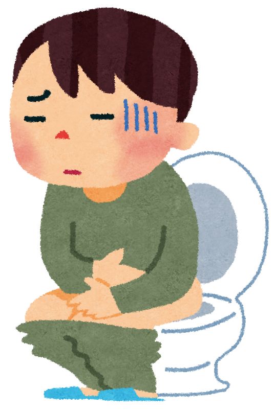

幼児との一年排便戦争の記録
幼児との一年排便戦争の記録
３歳の次男が明らかな便秘になったのは2016年11月くらいだった。そして今、2017年12月、やっと、やっと、やっと、安定した排便が一月以上続いている。これはこの一年におよぶ排便戦争の記録である。

ある日「あれ？次男はもう三日くらいうんちしてなくない？」と気づいた。ただ、それまでも、１日くらい間隔があくことはあったので最初は特に気にしなかった。
ただ、やはり若干排便の間隔が空きがちだったので、この頃から朝食の時に簡単なフルーツポンチを少量子供たちにあげるようにして朝強制的にバナナを含む食物繊維を与えるようにしていた（なお、この習慣は今も続いている）。
だからそのうちでるかなー、くらいの軽い気持ちだった。
ところが五日目になってもまだ出ない。さすがにやばいということになり、病院へ行った。
行ったら、すぐさま浣腸である。
串団子の団子くらいのおおきさの固い「栓」とともに大量のうんちがでてきた。すでにこの記事ではウンチ・排便という言葉を連発してるので細かい描写は避けるが、便秘持ちの方はよくご存じのアレのことである。
そして酸化マグネシウムを処方された（下記リンクは参考のためであり、実際に処方されたものとは異なります）
【第3類医薬品】酸化マグネシウムE便秘薬 90錠がドラッグストアストアでいつでもお買い得。当日お急ぎ便対象商品は、当日お届け可能です。アマゾン配送商品は、通常配送無料（一部除く）。amzn.to
ところが、それから数日間、やはり出ない。
思うに、この時の彼はウンチを「したくなかった」のだろう。すでにこの前になかなかウンチがでなかったり、でても痛かったりすることがあったからではないかと思う。
また病院に行き、さらに浣腸と酸化マグネシウムの量を調節。そして、出ないときはいちじく浣腸で出させる、という方針に。
この日から数ヶ月、与える水分量、食物繊維の量を気にしつつ、毎日浣腸をする生活になった。
それまで子供たちは夕方のお風呂前に自然排便をすることが多かったので、お風呂前に「ウンチをする、しない」「しないなら浣腸」の攻防が繰り広げられた。次男は嫌がったが、こればかりはしょうがない。毎日毎日浣腸した。数日に一回は強力な抵抗にあった。
最初ちょっと心配だったのが、「浣腸、今でも自分で排便しないのに、使い続けてたらこれなしで排便しなくなるのでは？」ということだった。一応医師によれば浣腸を続けているとそれなしで排便できなくなる…ということはない、むしろ毎日排便する習慣をつける方が重要ということだった（子供の年齢や状態にもよるかもしれないので、確認してください！）。
半年以上このままの状態で、酸化マグネシウムがなくなればもらいにいき、毎日投薬と浣腸。排便自体はできていたけれど、基本自然排便はできないし、少量ながら相変わらず固い「栓」になってるうんちがほぼ毎日観測できていた。
この期間の最後の方では極稀にではあったが、自然排便もするようになった。ただし、本当に時々なのでこれでは埒があかない。
そこで秋の終わり頃のある日から少しだけルーチンを変更したのである。「今日から朝起きてすぐウンチ」と「朝食のフルーツにプルーンを半分（長男とわけるから）入れる」というのを実践しだした。
ポッカサッポロ サンスウィート プルーン チャック付 240gがドライフルーツストアでいつでもお買い得。当日お急ぎ便対象商品は、当日お届け可能です。アマゾン配送商品は、通常配送無料（一部除く）。amzn.to
プルーンは特に根拠はなくて、うちの親が「あんたにプルーンをあげるとモリモリうんちしてた」と聞いていたのを思い出したのと、酸化マグネシウムをそれに包むと残さず食べてくれるから、というだけである。（注：筆者は本当にこの効能があるのか、正しいのか、は検証していません！あくまで「昔そういえば聞いたなぁ」という話です！）
開始直後はただ単純にこれまで夕方していた攻防戦を朝するようになっただけだったのだが、あれ？と気づいたら自ら排便するようになり、それから栓がでなくなった。
まだ酸化マグネシウムは残っているので投薬し続けているが、それでもしばらく様子を見ているかぎり、もう一月以上続いて自然排便できている。
結局なにが効いたのかはわからない。同時期に二つの変数（排便の時間とプルーン）を変えてしまったので、因果関係がわからないのだ。とにかく「ずっと諦めずに浣腸し続けてた」「朝起きてすぐトイレ」「プルーン（ひょっとするとフルーツポンチも）」のどれかないし、組み合わせが1年がかりで効いたのだ。
とりあえず一年続いた「次男の排便戦争」は今をもって勝利宣言としたい。
世の便秘幼児を育てている誰かのなんらかの参考にならんことを願う。
おまけ：手抜きフルーツポンチレシピ（幼児二人分）。バナナ一本、それにその時安いフルーツを2種類くらい（林檎、みかん、等）を食べやすいサイズに切る。量は要調整。例えば林檎だったら1/4個程度で充分。
フルーツを小さめのタッパー等にいれる。ポッカレモンを1，2回お好みで回し入れる。フルーツがひたひたになるくらいまで水をいれる。砂糖をひとさじ入れてかき混ぜる。冷蔵庫に入れて冷やしておく。夜作っておけば朝食にはそれをわけて出すだけ！うちのはこれにプルーンがのります。